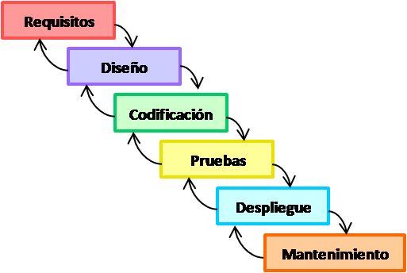
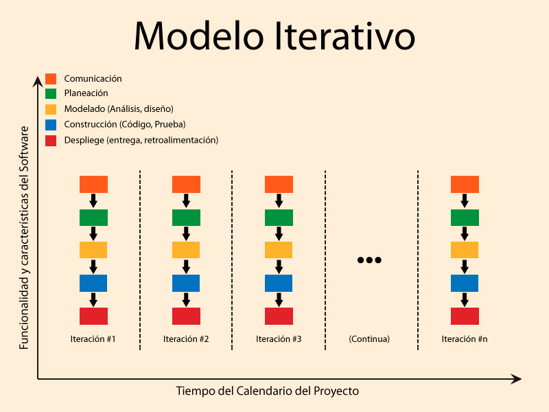
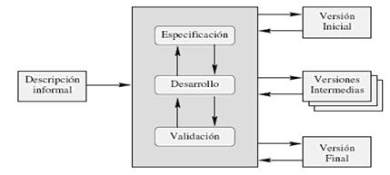
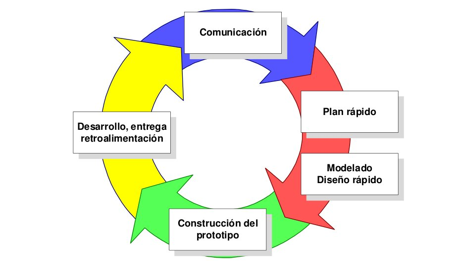
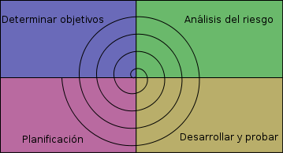
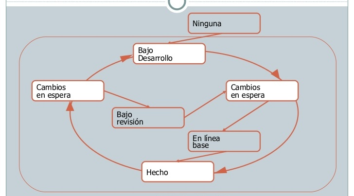

Un modelo de ciclo de vida define el estado de las fases a través de las cuales se mueve un proyecto de desarrollo de software.
El primer ciclo de vida del software, "Cascada", fue definido por Winston Royce a fines del 70. Desde entonces muchos equipos de desarrollo han seguido este modelo.
Sin embargo, ya desde 10 a 15 años atrás, el modelo cascada ha sido sujeto a numerosas críticas, debido a que es restrictivo y rígido, lo cual dificulta el desarrollo
de proyectos de software moderno. En su lugar, muchos modelos nuevos de ciclo de vida han sido propuestos, incluyendo modelos que pretenden desarrollar software más
rápidamente, o más incrementalmente o de una forma más evolutiva, o precediendo el desarrollo a escala total con algún conjunto de prototipos rápidos.
Hay varios modelos para perfilar el proceso de desarrollo, cada uno de las cuales cuenta con pros y contras. El proyecto debería escoger el más apropiado para sus
necesidades. En ocasiones puede que una combinación de varios modelos sea apropiado.
ALTERNATIVAS DE MODELOS DE CICLO DE VIDA:
MODELO CASCADA
Este es el más básico de todos los modelos, y sirve como bloque de construcción para los demás modelos de ciclo de vida. La visión del modelo cascada del
desarrollo de software es muy simple; dice que el desarrollo de software puede ser a través de una secuencia simple de fases. Cada fase tiene un conjunto
de metas bien definidas, y las actividades dentro de una fase contribuyen a la satisfacción de metas de esa fase o quizás a una subsecuencia de metas de
la fase. Las flechas muestran el flujo de información entre las fases. La flecha de avance muestra el flujo normal. Las flechas hacia atrás representan
la retroalimentación.
El modelo de ciclo de vida cascada, captura algunos principios básicos:
- + Planear un proyecto antes de embarcarse en él.
- + Definir el comportamiento externo deseado del sistema antes de diseñar su arquitectura interna.
- + Documentar los resultados de cada actividad.
- + Diseñar un sistema antes de codificarlo.
- + Testear un sistema después de construirlo.
Una de las contribuciones más importantes del modelo cascada es para los administradores, posibilitándoles avanzar en el desarrollo, aunque en una escala muy bruta.
Siguiendo el modelo de cascada de forma estricta, sólo cuando se finaliza una fase, comienza la otra. En ocasiones se realiza una revisión antes de iniciar la siguiente
fase, lo que permite la posibilidad de cambios (lo que puede incluir un proceso de control formal de cambio). Las revisiones también se utilizan para asegurar que la
fase anterior ha sido totalmente finalizada; los criterios para completar una fase se conocen frecuentemente con el término inglés "gate" (puerta). Este modelo desaconseja
revisitar y revisar fases que ya se han completado. Esta falta de flexibilidad en un modelo de cascada puro ha sido fuente de crítica de los defensores de modelos más
flexibles.

MODELO DE DESARROLLO ITERATIVO E INCREMENTAL
El desarrollo iterativo recomienda la construcción de secciones reducidas de software que irán ganando en tamaño para facilitar así la detección de problemas de importancia
antes de que sea demasiado tarde. Los procesos iterativos pueden ayudar a develar metas del diseño en el caso de clientes que no saben cómo definir lo que quieren.
Los riesgos asociados con el desarrollo de sistemas largos y complejos son enormes. Una forma de reducir los riesgos es construir sólo una parte del sistema, reservando
otros aspectos para niveles posteriores. El desarrollo incremental es el proceso de construcción siempre incrementando subconjuntos de requerimientos del sistema.
Típicamente, un documento de requerimientos es escrito al capturar todos los requerimientos para el sistema completo.
Note que el desarrollo incremental es 100% compatible con el modelo cascada. El desarrollo incremental no demanda una forma específica de observar el desarrollo de algún
otro incremento.
El modelo de desarrollo incremental provee algunos beneficios significativos para los proyectos:
- + Construir un sistema pequeño es siempre menos riesgoso que construir un sistema grande.
- + Al ir desarrollando parte de las funcionalidades, es más fácil determinar si los requerimientos planeados para los niveles subsiguientes son correctos.
- + Si un error importante es realizado, sólo la última iteración necesita ser descartada.
- + Reduciendo el tiempo de desarrollo de un sistema (en este caso en incremento del sistema) decrecen las probabilidades que esos requerimientos de usuarios
puedan cambiar durante el desarrollo.
- + Si un error importante es realizado, el incremento previo puede ser usado.
- + Los errores de desarrollo realizados en un incremento, pueden ser arreglados antes del comienzo del próximo incremento.

MODELO DE DESARROLLO EVOLUTIVO
Como el modelo de desarrollo incremental, el modelo de desarrollo evolutivo (algunas veces denominado como prototipado evolutivo) construye una serie de grandes versiones
sucesivas de un producto. Sin embargo, mientras que la aproximación incremental presupone que el conjunto completo de requerimientos es conocido al comenzar, el modelo
evolutivo asume que los requerimientos no son completamente conocidos al inicio del proyecto.
En el modelo evolutivo, los requerimientos son cuidadosamente examinados, y sólo esos que son bien comprendidos son seleccionados para el primer incremento. Los desarrolladores
construyen una implementación parcial del sistema que recibe sólo estos requerimientos.
El sistema es entonces desarrollado, los usuarios lo usan, y proveen retroalimentación a los desarrolladores. Basada en esta retroalimentación, la especificación de
requerimientos es actualizada, y una segunda versión del producto es desarrollada y desplegada. El proceso se repite indefinidamente.
Note que el desarrollo evolutivo es 100% compatible con el modelo cascada. El desarrollo evolutivo no demanda una forma específica de observar el desarrollo de algún
incremento. Así, el modelo cascada puede ser usado para administrar cada esfuerzo de desarrollo. Obviamente, el desarrollo incremental y evolutivo puede ser combinado también.
Todo lo que uno tiene que hacer es construir un subconjunto de requerimientos conocidos (incremental), y comprender al principio que muchos nuevos requerimientos es probable
que aparezcan cuando el sistema sea desplegado o desarrollado.
El desarrollo de software en forma evolutiva requiere un especial cuidado en la manipulación de documentos, programas, datos de test, etc. desarrollados para distintas
versiones del software. Cada paso debe ser registrado, la documentación debe ser recuperada con facilidad, los cambios deben ser efectuados de una manera controlada.

MODELO DE PROTOTIPO
El prototipado de requerimientos es la creación de una implementación parcial de un sistema, para el propósito explícito de aprender sobre los requerimientos del sistema.
Un prototipo es construido de una manera rápida tal como sea posible. Esto es dado a los usuarios, clientes o representantes de ellos, posibilitando que ellos experimenten
con el prototipo. Estos individuos luego proveen la retroalimentación sobre lo que a ellos les gustó y no les gustó acerca del prototipo proporcionado, quienes capturan en
la documentación actual de la especificación de requerimientos la información entregada por los usuarios para el desarrollo del sistema real. El prototipado puede ser usado
como parte de la fase de requerimientos (determinar requerimientos) o justo antes de la fase de requerimientos (como predecesor de requerimientos). En otro caso, el prototipado
puede servir su papel inmediatamente antes de algún o todo el desarrollo incremental en modelos incremental o evolutivo.
El Prototipado ha sido usado frecuentemente en los 90, porque la especificación de requerimientos para sistemas complejos tienden a ser relativamente dificultoso de cursar.
Muchos usuarios y clientes encuentran que es mucho más fácil proveer retroalimentación convenientemente basado en la manipulación, desde un prototipo, en vez de leer una
especificación de requerimientos potencialmente ambigua y extensa.
Diferente del modelo evolutivo donde los requerimientos mejor entendidos están incorporados, un prototipo generalmente se construye con los requerimientos entendidos más pobremente.
En caso que ustedes construyan requerimientos bien entendidos, el cliente podría responder con "sí, así es", y nada podría ser aprendido de la experiencia.

MODELO ESPIRAL
El modelo espiral de los procesos software es un modelo del ciclo de meta-vida. En este modelo, el esfuerzo de desarrollo es iterativo. Tan pronto como uno completa un
esfuerzo de desarrollo, otro comienza.
La principal características del modelo en espiral es la gestión de riesgos de forma periódica en el ciclo de desarrollo. Este modelo fue creado en 1988 por Barry Boehm,
combinando algunos aspectos clave de las metodologías del modelo de cascada y del desarrollo rápido de aplicaciones, pero dando énfasis en un área que para muchos no jugó
el papel que requiere en otros modelos: un análisis iterativo y concienzudo de los riesgos, especialmente en el caso de sistema complejos de gran escala.
La espiral se visualiza como un proceso que pasa a través de algunas iteraciones con el diagrama de los cuatro cuadrantes representativos de las siguientes actividades:
- + Crear planes con el propósito de identificar los objetivos del software,seleccionados para implementar el programa y clarificar las restricciones en el desarrollo
del software.
- + Análisis de riesgos: una evaluación analítica de programas seleccionados, para evaluar como identificar y eliminar el riesgo.
- + La implementación del proyecto: implementacióndel desarrollo del software y su pertinente verificación.
- + Modelo de espiral con énfasis en los riesgos, haciendo hincapié en las condiciones de las opciones y limitaciones para facilitar la reutilización de software,
la calidad del software puede ayudar como una meta propia en la integración en el desarrollo del producto..
Sin embargo, el modelo en espiral tiene algunas limitaciones, entre las que destacan:
El énfasis se sitúa en el análisis de riesgo, y por lo tanto requiere de clientes que acepten este análisis y actúen en consecuencia. Para ello es necesaria confianza
en los desarrolladores así como la predisposición a gastar más para solventar los temas, por lo cual este modelo se utiliza frecuentemente en desarrollo interno de software
a gran escala.
Si la implementación del riesgo de análisis afectará de forma esencial los beneficios del proyecto, no debería utilizarse este modelo.
Los desarrolladores de software han de buscar de forma explícita riesgos y analizarlos de forma exhaustiva para que este modelo funcione.La primera fase es la búsqueda de
un plan para conseguir los objetivos con las limitaciones del proyecto para así buscar y eliminar todos los riesgos potenciales por medio de un cuidadoso análisis, y si
fuera necesario incluyendo la fabricación de un prototipo. Si es imposible descartar algunos riesgos, el cliente ha de decidir si es conveniente terminar el proyecto o
seguir adelante ignorando los riesgos. Por último, se evalúan los resultados y se inicia el diseño de la siguiente fase.El modelo espiral no es una alternativa del
modelo cascada, ellos son completamente compatibles.

MODELO CONCURRENTE
Como el modelo espiral, el modelo concurrente provee una meta-descripción del proceso software. Mientras que la contribución primaria del modelo espiral es en realidad que
esas actividades del software ocurran repetidamente, la contribución del modelo concurrente es su capacidad de describir las múltiples actividades del software ocurriendo
simultáneamente.
Esto no sorprende a nadie que ha estado involucrado con las diversas actividades que ocurren en algún tiempo del proceso de desarrollo de software. Discutamos un poco tales
casos:
Los requerimientos son usualmente "líneas de base", cuando una mayoría de los requerimientos comienzan a ser bien entendidos, en este tiempo se dedica un esfuerzo considerable
al diseño. Sin embargo, una vez que comienza el diseño, cambios a los requerimientos son comunes y frecuentes (después de todo, los problemas reales cambian, y el entendimiento
de los problemas desarrollados también). Es desaconsejado detener el diseño en este camino cuando los requerimientos cambian; en su lugar, existe una necesidad de modificar
y rehacer líneas de base de los requerimientos mientras progresa el diseño. Por supuesto, dependiendo del impacto de los cambios de los requerimientos el diseño puede no ser
afectado, medianamente afectado o se requerirá comenzar todo de nuevo.
Durante el diseño de arquitectura, es posible que algunos componentes comiencen a ser bien definidos antes que la arquitectura completa sea estabilizada. En tales casos,
puede ser posible comenzar el diseño detallado en esos componentes estables. Similarmente, durante el diseño detallado, puede ser posible proceder con la codificación y
quizás regular testeando en forma unitaria o realizando testeo de integración previo a llevar a cabo el diseño detallado de todos los componentes.
En algunos proyectos, múltiples etapas de un producto se han desarrollado concurrentemente. Por ejemplo, no es inusual estar haciendo mantención de la etapa 1 de un producto,
y al mismo tiempo estar haciendo mantención sobre un componente 2, mientras que se está haciendo codificación sobre un componente 3, mientras se realiza diseño sobre una etapa
4, y especificación de requisitos sobre un componente 5.
En todos estos casos, diversas actividades están ocurriendo simultáneamente. Eligiendo seguir un proyecto usando técnicas de modelación concurrente, se posibilita el
conocimiento del estado verdadero en el que se encuentra el proyecto.